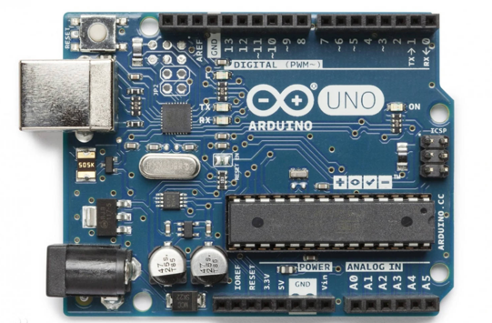
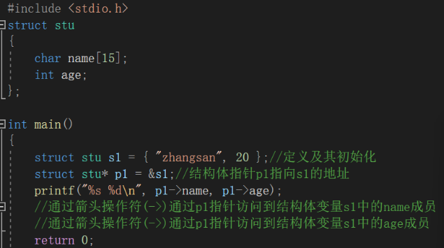
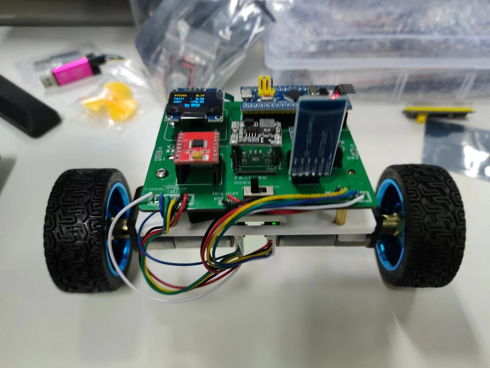
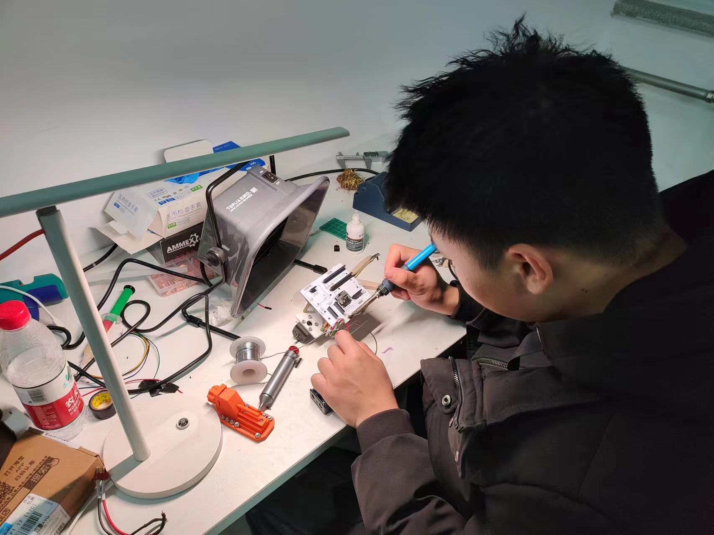
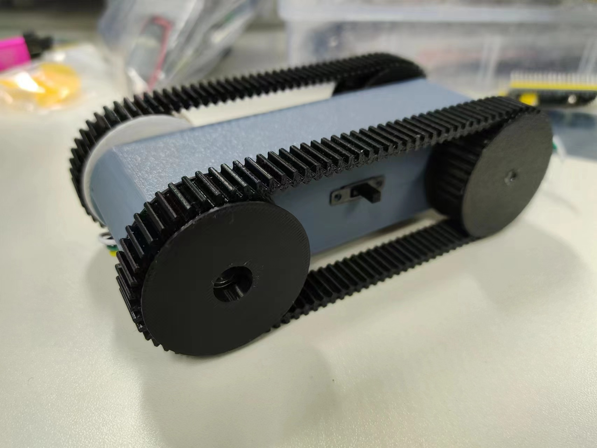

阶段工作概述
什么是嵌入式
嵌入式系统是以应用为中心，以计算机技术为基础，软硬件可裁剪，适应应用系统对功能、可靠性、成本、体积、功耗等严格要求的专用计算机系统。嵌入式技术的特点就是将硬件和软件相结合，综合人工智能技术，推动物联网中智能环境的实现。

工作完成情况
Arduino学习
已完成小组成员已经完成Arduino的学习任务，开始进行基于Arduino开发板的蜂群小车的制作。
编程语言学习
已完成目前，小组成员已经完成C语言基础的学习，可以熟练使用C语言进行代码编写，达到后续学习要求。
STM32单片机学习
进行中小组成员开始学习STM32单片机的基础内容，为后续制作更复杂项目打下坚实基础。
学习过程展示

C语言基础学习
通过编程练习、语法实践，掌握变量、指针、函数等核心知识点，完成基础代码编写任务。

Arduino开发板实践
实操Arduino开发板，完成LED闪烁、传感器数据读取等基础实验，掌握硬件连接与代码烧录流程。

电烙铁焊接训练
学习使用电烙铁进行元器件焊接，练习小车电路组装，提升硬件动手能力与焊接工艺水平。

STM32基础实验
入门STM32单片机外设接口使用，完成GPIO控制、定时器中断等实验，理解嵌入式进阶开发逻辑。
学习过程遵循"理论-实践-复盘"模式：先掌握基础理论知识，再通过硬件实操验证理论，最后总结问题与优化方向，逐步构建嵌入式开发能力体系。
未来工作计划
深入学习STM32单片机
学习STM32丰富的外设接口，学会利用其强大的处理能力来进行电机控制、工业自动化、人机界面、农业联网、家居联网等嵌入式应用开发。
嵌入式Linux系统开发
熟悉使用Linux下的C语言开发环境，并学习制作Linux环境下的嵌入式应用，拓展嵌入式开发的深度与广度。
RTOS的学习
熟悉实时操作系统，熟练掌握多任务管理、调度算法、消息队列等核心知识点，提升复杂嵌入式系统开发能力。
项目制作与竞赛
进行个人兴趣项目开发，参与大学生创新创业大赛、数学建模、蓝桥杯等比赛，以赛促学提升综合能力。